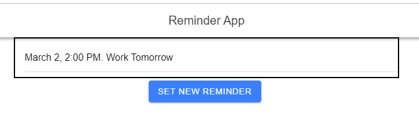
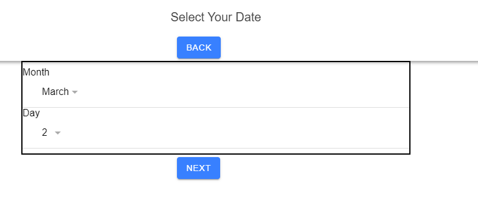
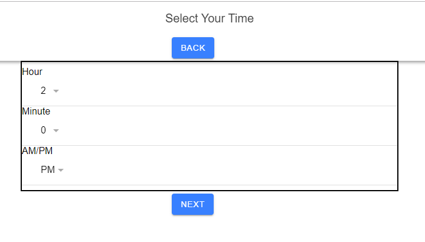
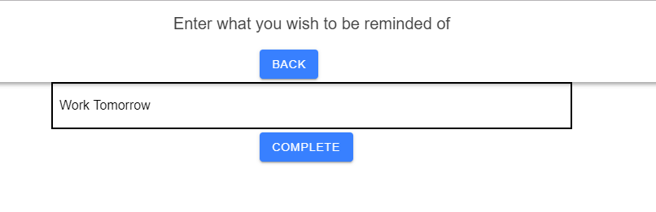

This link will take you to my first "major" website that I made.
I made this as a final for my HTML/CSS class. It it a website about the alabama football team. It shows I have a somehwat "decent" understand of HTML, but could use improvement on CSS. CSS is something that I have always struggled with, but I find it important that you should know as a potential employer what my strengths AND weaknesses are.
Shown below is a picture of the homepage if for some reason it didn't load for you.
This next project is my final that I made for my SQL class.
This link will take you to it.
It may look simple(at least design wise), but it actually has quite a bit behind it. All the reviews the user enters are stored into a database along with their username.
The database then takes that newly stored review and places it back onto the page. The main challenges when creating this were making the getting the data to send to the database and then getting the data to return to the webpage.
This shows I have a good understanding of SQL, but again it points out the negative effects of bad CSS. I truly am working on my CSS, and I hope you can bear with me while I work on it.
The final thing(for now) that I have to share is my Reminder App. I made it as a final for my CITPT 227 class. It is made in Ionic and therefore is not hosted on a web server.
The first draft of this projects has it to where all 3 aspects of the application are on separate pages rather than just one.
When I fix up my application I will be changing it to where it is all on one page, in turn wasting less resources and white space on other pages.
The styling wasn't my biggest concern when making this. I was more focused on actually getting it to work since it was one of the harder projects for me.
I will be sharing images of the webpage and then describing what each is representing since the website is not hosted.
We see in the first image what the home page looks like. This is where the data that we gather through the other pages gets stored.

In the 2nd image we see the date selector. The user selects a date and it stores it into a date variable which eventually gets passed back to the home page.
In the 3rd image we see the time selector. It is also stored into a variable and gets passed back to the home page.
In the final image we see reminder selector. This is where the user puts in what the task they need to reminded of is. It is also stored in a variable and passed back to the home page. When you click the Complete button it takes you back to the home page and shows you the reminder you created(reference image 1).
